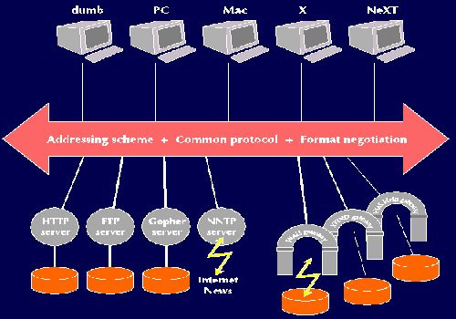
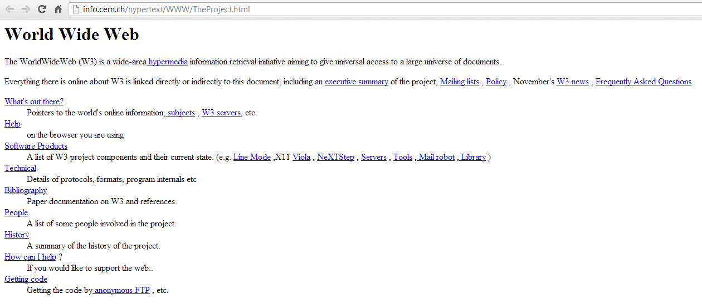

Why it represents a milestone?

It all began in 1980, when Tim Berners-Lee was hired at CERN as a consultant in the field of software engineering. Right from the start, he focused on how to make information, which was constantly and rapidly increasing at CERN, storable and usable. In 1989 he presented a document entitled “Information Management: a Proposal”. In this paper he explains how, based on the work he was doing with his colleague Robert Cailliau, the internet could be used to share scientific documentation in electronic format. The goal was to improve sharing and cooperation between the institute's researchers. He personally developed, on his Next Cube, the first Web server and the first browser, exploiting the idea of hypertext (theoretically introduced by Ted Nelson in 1965).
In October of 1990, Tim Berner-Lee invented three essential technologies that remain at the base of today’s web :
HTML: HyperText Markup Language. This hypertext system initiated the evolution of information disclosure, as it made it possible to move from one topic to another (or from one page to another) with ease, through links.
URI: Uniform Resource Identifier. An electronic address that allows the identification and location of a page, or a resource (images, videos, other files) searched by the user online. It is also commonly called a URL.
HTTP: Hypertext Transfer Protocol. Allows for the retrieval of linked resources from across the web.


On August 6, 1991, Tim Berners Lee published the first website at CERN.
This site had an informative-explanatory purpose, describing the Web and how to use it. In 1993, the National Center for Supercomputing Applications, NCSA, of the University of Illinois released the first version of the Mosaic browser, which achieved an appreciable level of popularity. The spread of increasingly reliable and easy-to-use browsers, such as Netscape and Navigator, facilitated the expansion of the World Wide Web. At that time there were more than 500 known web servers and the WWW reached 1% of Internet traffic. CERN organized the first international conference of the World Wide Web, which was attended by 400 users and developers. The impact that the web had on the media was enormous.
The World Wide Web, revolutionized the way humans communicate and share data with each other. The ability to easily access any type of content guarantees many opportunities that were not even imagined before, and facilitates people's daily lives. Not only that: social networks and the ability to communicate easily are only possible thanks to the web. Exchanging and accessing information in such a simple way allows you to promote culture and knowledge. Immediate communication between people removes any boundaries or distances and allows progress to take its course.